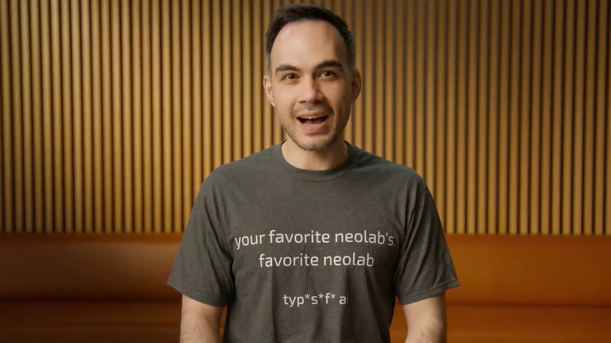
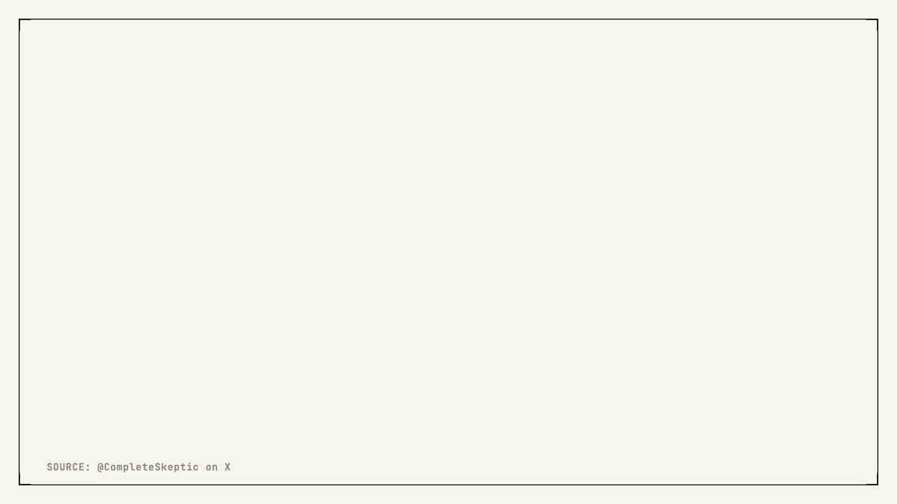
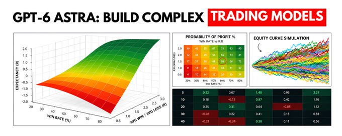

How to Use Jev to Build a 24/7 HFT Trading System
I will break down the exact framework to build a millisecond speed 24/7 HFT trading system with Jev, along with the exact resources that helped me personally.
Let's get straight to it.
Bookmark This - if you are building HFT trading bots, wire your agents with AgenKit at . It turns one prompt into a FULL Quant Engineering Team that ships production trading code. START HERE.
If you are building your own trading system with Jev, DM me your current setup and i will personally review the first 10. MOVE FAST.
On September 15, TypeSafe AI came out of 2 years of stealth with $40M led by DCVC and released a new class of AI model called Jev.

After co-inventing ChatGPT, I kept asking myself: why have superhuman chat models not led to AGI?
I’ve spent the last 2 years in stealth building a new way to train models (RLCD), and a new type of frontier AI model that we are releasing today: Jev
• 20-200x faster
• 40-400x

The founder is Diogo Almeida, who co-invented ChatGPT and InstructGPT at OpenAI.
Jev does not generate text.
You send it market state plus typed questions, it returns calibrated decisions in 70 to 500 milliseconds, at $0.042 per million input tokens, output free.
That latency is the whole story for trading.
An LLM takes 3 to 30 seconds to reason about an order book. By the time it answers, the book has moved 40 times.
Jev answers before the next block lands.
And the proof it works for trading arrived within 72 hours of launch.
Jarrod Watts shipped a live market making bot on Monad that reads the Kuru MON-USDC order book, fires a Jev decision every 300 millisecond block and posts a real post-only limit order one tick inside the touch.


I built a trading bot with Jev!
Jev decides if it should "buy" or "sell", given the price feed of an asset pair, and executes real trades.
It uses Monad to place the orders on Kuru's on-chain order book in every 300ms block.
Demo link → jev-trader.vercel.app
0:01 / 0:10
1000+ stars in 3 days. Decisions landing in 81 milliseconds. Live dashboard streaming in public.
That repo is the existence proof.
One thing to understand before we go further, because it shapes everything below.
Jev is the decision engine. But a decision engine is not a trading system.
Someone still has to build the state engine, the policy gates, the risk vetoes, and the 24/7 loop around it, at production quality.
That's why I am using for. It turns one prompt into a full quant engineering team that ships the code Jev plugs into.
Jev decides. AgenKit builds the system that calls it.
Everything below is the blueprint. AgenKit is how you ship it without writing every layer by hand.
This article is the full engineering manual.
By the end of this you will know:
- You will be able to build a 24/7 HFT trading bot at hedge fund quality using the fastest decision model available right now, Jev.
- How to split a trading system into deterministic code and probabilistic judgment, the split that actually works.
- How to run a full battery of parallel judgments on every block in one call, at single-question latency.
- The complete from-scratch setup, from waitlist to your first typed decision, in 10 minutes.
- Exactly what Jev replaces in your stack and what it does not, stated precisely enough to hold me to.
Let's get into it.
Part 1: What Jev Is and Why It Fits HFT
Jev is not an LLM. It does not generate text or explain itself.
TypeSafe calls it a System One model, after Kahneman's fast intuitive thinking.
The bet: most decisions inside software are System 1 judgments (which bucket, is this urgent, is this toxic) and we have been renting slow System 2 chat models to make them.
UNDERSTAND JEV EASILY WITH THIS VISUAL:

Here's a 45-second TL;DR on Jev.
I find the core idea beautifully simple, but the video made it really hard to understand.
Hope you find it helpful.

引用

Diogo Almeida

@CompleteSkeptic
2:56
After co-inventing ChatGPT, I kept asking myself: why have superhuman chat models not led to AGI?
I’ve spent the last 2 years in stealth building a new way to train models (RLCD), and a new type of frontier AI model that we are releasing today: Jev
• 20-200x faster
• 40-400x
The mental model: LLM: state to text. Jev: state to decision distribution.
LLM Vs JEV
You send a state (any JSON, like an order book snapshot) plus typed questions with predefined answer spaces. Jev returns typed answers with probabilities and confidence. No prose, no parsing, no JSON repair.
- Noul returns a 0 to 1 value. Is the flow toxic? → 0.83
- Choice picks one option from a list, up to 255. Which regime? → trending 0.63, mean_reverting 0.22, chaotic 0.15
- Score rates the state on a rubric you define. Quote environment 0 to 3? → 2.3
All three mix in one call. Every question is evaluated in parallel and in isolation. Adding questions barely moves latency, and there is no context-rot because each is evaluated independently.
Two facts explain the speed.
- Jev is not autoregressive. An LLM decodes token by token, sequentially. Jev computes probability distributions across all your choices in parallel passes. Six questions cost the same latency as one.
- Jev is trained with RLCD, Reinforcement Learning for Calibrated Decisions. It optimizes probabilities against real outcomes, not human preference. Higher confidence really does mean higher accuracy in aggregate.
Context is 32,000 tokens. Enough for a dense snapshot and recent trades. Not your strategy doc, and that is the point. Jev answers narrow questions about compact state. Code owns the rest.
Where does Jev fit in a latency budget?
Colocated equities run in microseconds. Jev has no business there. FPGA and C++ keep that lane.
On-chain order books run at block cadence. Monad blocks every 300ms, Solana slots around 400ms. Jev fits inside one block with room for execution.
Tactical reads (regime, toxicity, strategy selection) have horizons of seconds. Jev is perfect there on cost.
The cost that changes the architecture: one fully loaded decision every block, 24/7, runs $10 to $25 a month. The same loop on a frontier LLM costs $50 to $150 per hour.
On TypeSafe's own four-workflow eval, Jev scores 67.8% agreement with a frontier consensus at $0.0004 per case, versus GPT-5.6 Terra at 67.9% and $0.0304. Same accuracy, 76x cheaper. Vendor numbers, directional, but the direction is not subtle.
Part 2: The Architecture That Separates Systems From Demos
One principle carries the whole build.
Jev should not own the trading system. It should own selected judgments inside it.
Every failed AI bot i have reviewed asked the model to trade.
Look at BTC, tell me what to do. That question is unanswerable at any latency.
The correct decomposition:
Code calculates the state. Jev interprets the state. Code applies policy. Execution places the order.
Everything computable stays in code. Mid, spread, imbalance, realized vol, inventory, drawdown, VWAP, queue position. Never spend a Jev call on arithmetic. This matches TypeSafe's own methodology: deterministic facts in code, models for fuzzy judgment.
Everything that is a judgment goes to Jev. Is this regime trending or mean-reverting? Is this flow informed or noise? Is this a good setup? Has execution degraded?
And the official design rule for the questions: atomic questions, composed in code. If a question needs reasoning or weighs multiple factors, decompose it. Ask each factor separately, combine with your own weights. When priorities change, you edit a coefficient, not a prompt.
MARKET DATA
↓
FEATURE ENGINE
↓
DETERMINISTIC STATE SNAPSHOT
↓
JEV
┌──────────┼──────────┐
REGIME TOXICITY DIRECTION
QUALITY LIQUIDITY RISK STATE
└──────────┼──────────┘
↓
PROBABILITY VECTOR
↓
POLICY ENGINE
↓
┌──────────┴──────────┐
HARD RISK RULES TRADE SIGNAL
└──────────┬──────────┘
↓
EXECUTIONThe hard risk layer always wins. Part 5 covers it.
The Architecture
Part 3: Setting Up Jev From Scratch in 10 Minutes
No cloned repos. Ground up, pulled from the official quickstart.
Setting Up Jev
2. Install the official skill so your agent writes correct Jev calls.
bash
npx skills add typesafe-ai/skills --skill typesafe-aiOn Claude Code it is two commands. The marketplace add alone installs nothing.
bash
claude plugin marketplace add typesafe-ai/skills
claude plugin install typesafe@typesafe-ai3. Create an API key in the dashboard.
bash
export TYPESAFE_API_KEY="your-key"4. Install the SDK. Python needs 3.10+.
bash
pip install typesafe-sdk # Python
npm install @typesafe-ai/sdk # TypeScript
cargo add typesafe-ai-rs # Rust, for the execution layerIn an agent, one sentence routes it: say "use the TypeSafe skill" in your prompt.
5. Fire your first decision. The client reads TYPESAFE_API_KEY and calls jev-latest by default.
python
from typesafe_sdk import Choice, Noul, Score, TypeSafeClient
client = TypeSafeClient()
state = {
"mid": 3.4127, "spread_bps": 3.5, "imbalance": 0.71,
"realized_vol_5m": 0.034, "inventory": -120,
"aggressive_buy_ratio": 0.63
}
response = client.system_one(
state=state,
questions={
"regime": Choice(
instructions="What market regime does this state describe?",
criteria={"trending": None, "mean_reverting": None, "chaotic": None},
),
"toxic_flow": Noul(
instructions="Is aggressive flow likely informed rather than noise?",
),
"quote_environment": Score(
instructions="How favorable is this state for providing liquidity?",
legend={"0": "Do not quote", "1": "Marginal",
"2": "Standard", "3": "Excellent"},
),
},
)Two setup notes that save you later.
- For HFT use the direct API, POST . Gateways (OpenRouter as ~typesafe/jev-latest, Vercel AI Gateway as typesafe-ai/jev, LiteLLM passthrough) each add round trip you cannot recover.
- Pin your model version and log the version in each response. Your confidence gates are calibrated to one model. A silent upgrade with unpinned thresholds breaks systems quietly.
Part 4: The State Engine and the Parallel Judgment Battery
Two build steps, because they are the heart of the system.
The state engine is pure deterministic code and where most builders underinvest. On every block, compute a compact snapshot under 400 tokens:
plaintext
PRICE mid, microprice, returns 1m/5m/30m
BOOK spread bps, depth 3 levels, imbalance, queue position
FLOW aggressive buy/sell volume, trade + cancel intensity
VOL realized vol short + medium, vol vs 24h regime
CROSS divergence vs reference venue, basis, funding
BOOK PnL inventory, unrealized PnL, drawdown, position age
HEALTH fill ratio, reject rate, slippage, last 10 latenciesThree rules. Keep it dense and numeric, you pay per input token. Timestamp discipline is absolute, every field uses only information strictly before the decision. Log every snapshot with its decision, that triple is your calibration data later.
The judgment battery is where a system beats a demo. One question is a demo. The full battery in one call is the professional pattern, and the batching economics reward it 12x over.
This is exactly how elite prop traders think.
Not one buy/sell call, a battery of simultaneous reads.
python
response = client.system_one(
state=snapshot,
questions={
"regime": Choice(instructions="Regime?",
criteria={"trending": None, "mean_reverting": None,
"high_vol": None, "crisis": None}),
"direction": Choice(instructions="Bias next 10 blocks?",
criteria={"up": None, "down": None, "neutral": None}),
"toxic_flow": Noul(instructions="Is aggressive flow informed?"),
"liquidity_stressed": Noul(instructions="Book thinner than 24h norm?"),
"quote_environment": Score(instructions="Favorable to provide liquidity?",
legend={"0": "No", "1": "Marginal", "2": "Standard", "3": "Excellent"}),
"inventory_pressure": Score(instructions="Urgency to cut inventory?",
legend={"0": "None", "1": "Mild", "2": "Skew hard", "3": "Reduce now"}),
},
)Six judgments, one call, one latency, about $0.00001 per block.
Then the policy engine, yours in code forever:
python
def compose_action(ans, snap, limits):
if snap["drawdown"] > limits.max_drawdown: return KILL
if ans["toxic_flow"].noul > 0.6: return PULL_QUOTES
if ans["liquidity_stressed"].noul > 0.7: return WIDEN
q = ans["quote_environment"]
if q.score >= 2.0 and q.confidence > 0.80:
skew = inventory_skew(ans["inventory_pressure"].score)
return quote_both_sides(skew=skew)
if q.score >= 1.0:
return quote_wide()
return STAND_DOWNThree points to internalize: Thresholds live in your code, not the model, exactly as TypeSafe's confidence docs prescribe. Write one threshold per action scaled to what being wrong costs, not one for the whole system. And fractional Kelly, (2p - 1) capped at quarter, is only defensible because RLCD makes p mean something. With LLM logprobs it is fiction.
The State Engine and the Parallel Judgment Battery
Part 5: The 24/7 Loop, Risk Engine, and Fallback Ladder
Now assemble the loop that justifies 24/7.
The deterministic half of market making is 50 year old math and stays in code. Your pricing engine computes the Avellaneda-Stoikov reservation price and spread every block:
plaintext
reservation r = mid - inventory * gamma * sigma^2 * (T - t)
half spread = gamma * sigma^2 * (T - t) + (2/gamma) * ln(1 + gamma/kappa)Jev answers only what the formula cannot: is this an environment worth quoting into at all?
The full loop:
plaintext
Block event (WebSocket newHeads + polling backstop)
→ read L2 book (best bid/ask/depth)
→ compute state snapshot (deterministic, < 400 tokens)
→ fire Jev battery (six judgments, one call)
→ policy engine composes action
→ A-S pricing computes reservation + spread
→ risk engine checks hard limits (absolute veto)
→ cancel old quotes, post new post-only orders
→ log, await fills, book PnL, update inventory
→ next blockThat is nine stages, each a tested module with its own failure modes. This is exactly the point where a hand-built system turns into a month of debugging.
Point AgenKit at this loop spec and it ships each layer with test-first discipline, spec to review to deploy, so you are calibrating a working system by the weekend instead of still wiring the WebSocket.
Two details decide whether this survives reality.
- The block deadline rule: if the Jev decision has not returned before the next block, hold. Never post a quote on stale state. jev-trader handles this exact case.
- The gas honesty check: the jevons critique fork ran the numbers and showed naive every-block cancel-replace loses money structurally, roughly 428 MON per hour in gas against a 3.5 bps spread. Your loop needs a wider spread, longer resting times, or a real directional edge from the battery. Run this math before your first live order.
The risk engine never delegates to Jev. Hard-coded deterministic vetoes, checked before every order, zero negotiation:
plaintext
max position max daily loss max drawdown
max order size max inventory age max stale-data age
max leverage max API errors max decision latencyEvery limit must be checkable by something other than the model's own claim. File exists at path X. Metric below Y in the output. Never trust the system says it ran.
The fallback ladder is why most "24/7" bots are actually 24/7-until-2AM bots:
plaintext
healthy + high confidence → normal operation
healthy + low confidence → reduce size or observe
late past block deadline → hold, no stale quotes
Jev unavailable → deterministic fallback only
hard limit breached → kill switch, flatten, alertWith this ladder the system is autonomous. Without it, it is AI-powered until the first network partition.
Where retail can actually run this today: on-chain order books at block cadence (Monad via Kuru, Solana DEXs, Hyperliquid) and prediction markets with 200 to 500 bps spreads. What is locked: top US equities, owned by Citadel Securities and Jane Street at microsecond speed. Do not bring a 300ms loop to a microsecond fight.
Part 6: Calibration and the Honest Contract
Calibration first, because it is the step that makes quants trust the system.
Do not backtest "did Jev predict price". Test the whole policy.
Four baselines on identical data, features, costs, and limits: hand-written rules, a frontier LLM layer, a Jev layer, and Jev plus confidence gating. Measure Sharpe, Sortino, max drawdown, hit rate, slippage, adverse selection, cost per million decisions and coverage.
The Jev-plus-gating versus plain-Jev comparison is the real research question: does abstaining when uncertain improve the book? On a calibrated model it should. That is the entire bet.
Then verify calibration itself.
If Jev says P(up) = 0.80, do 80%-tagged events happen 80% of the time on your venue? Plot predicted probability against empirical frequency, compute Brier score, log loss and Expected Calibration Error from your logged triples. RLCD calibrates against TypeSafe's distribution, not yours. If your reliability curve bends, apply Platt scaling in the policy layer.
The honest contract. Screenshot this.
Jev CAN: return typed calibrated decisions in 70 to 500ms, evaluate dozens of parallel questions at single-question latency, handle 255 choices and 32K state, sit inside a 300ms block loop, replace fuzzy rules and LLM classification and heuristic scoring and regime classifiers and guardrails, drive fractional Kelly after you verify calibration, and run a full battery every block for $10 to $25 a month.
Jev CANNOT: generate text or design your strategy, chain dependent judgments in one call (questions are isolated, dependencies are a second request), compete in the microsecond lane, replace market data infra or numerical computation or exchange connectivity or hard risk controls, guarantee vendor numbers on your workload, or turn a losing strategy into a winning one. Jev makes decisions cheap and fast. Edge is still your job.
That second list is not hedging. It is the reason the first list is believable.
Closing
Jev is not a smarter LLM.
It is a different species, a decision engine that returns calibrated probabilities in the budget of a single block.
The system that wins is not the one that asks Jev to trade. It computes everything computable in code, sends one compact state with a full battery of atomic questions, gates every action on calibrated confidence, prices with deterministic math and keeps hard risk rules with absolute veto power.
I did not use Jev because it is the newest model on the timeline.
I decomposed a trading system into deterministic computation and probabilistic judgment, then tested whether a calibrated decision model fits the second half.
So far the answer is yes and the logs proving it are the calibration data the system needs anyway.
In my previous articles i broke down the mathematical trading models on GPT-6 Astra, the one-person hedge fund architecture and the market making layer. This one adds the millisecond judgment engine between the state and the order.
GPT-6 Astra is the most powerful trading agent right now.
It gives you AGI-adjacent reasoning.
I've shown the exact way to use GPT-6 Astra at its HIGHEST benchmark.
You could literally build MOST complex trading models like hedge fund with it.

How to Use GPT-6 Astra to Build Complex Mathematical Trading Models
I will break down exactly how to build the complex mathematical trading models like hedge funds and teach you the EXACT way to use GPT-6 Astra to its PEAK potential.
Let's get straight to it.
Bookmark...
So here is the question.
Are you still sending your order book to a chat model and waiting 8 seconds for prose or asking 6 typed questions and getting 6 calibrated answers back before the next block lands?
There is no wrong answer. But there are very revealing ones.